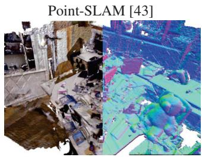
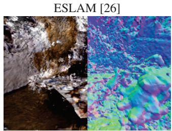
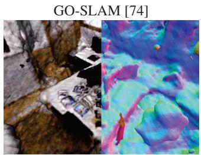
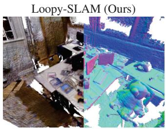
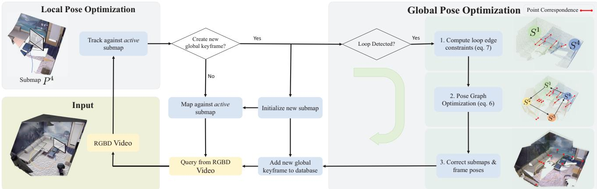
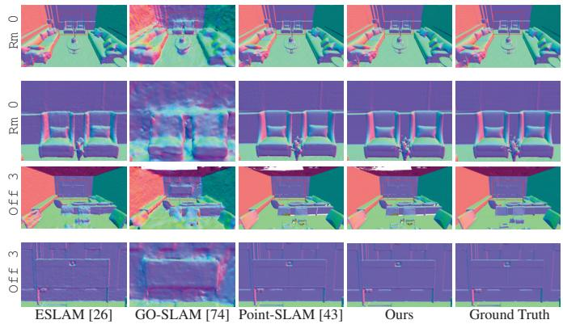
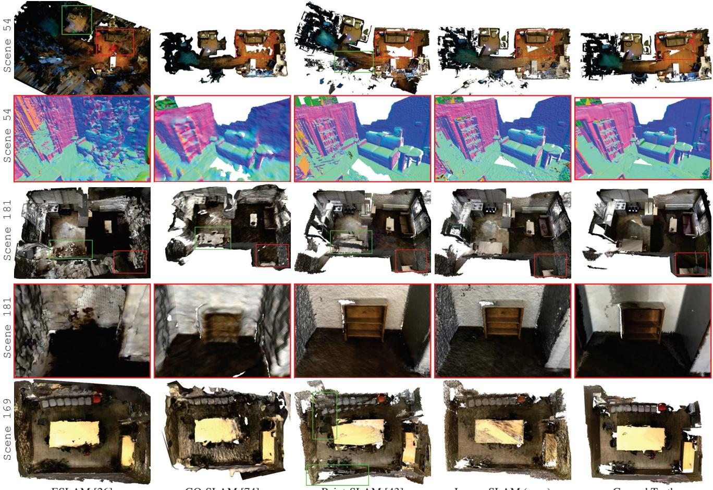

Loopy-SLAM: Dense Neural SLAM with Loop Closures
Lorenzo Liso1* Erik Sandstrom¨ 1* Vladimir Yugay3 Luc Van Gool1,2,4 Martin R. Oswald1,3 1ETH Zurich¨ 2KU Leuven 3University of Amsterdam 4INSAIT
ATE Depth L1 4.64 cm 8.79 cm


ATE Depth L1 29.73 cm 42.89 cm


ATE Depth L1 7.03 cm 3.81 cm
Figure 1. Benefits of Loopy-SLAM. While Point-SLAM yields high-fidelity reconstructions it does not implement loop closure and may duplicate geometries due to drift. ESLAM is faced by the same problem due to the lack of loop closure. GO-SLAM implements loop closure, but computes rather low quality map geometry. In contrast to GO-SLAM which requires to save the entire history of input frames used for mapping to update the map after loop closures, our approach anchors the neural scene representation on points which can simply be shifted without recomputing the dense map from scratch. We show the ATE RMSE and the depth L1 re-rendering error on the mesh for the TUM-RGBD fr1 room scene.
Abstract
Neural RGBD SLAM techniques have shown promise in dense Simultaneous Localization And Mapping (SLAM), yet face challenges such as error accumulation during camera tracking resulting in distorted maps. In response, we introduce Loopy-SLAM that globally optimizes poses and the dense 3D model. We use frame-to-model tracking using a data-driven point-based submap generation method and trigger loop closures online by performing global place recognition. Robust pose graph optimization is used to rigidly align the local submaps. As our representation is point based, map corrections can be performed efficiently without the need to store the entire history of input frames used for mapping as typically required by methods employing a grid based mapping structure. Evaluation on the synthetic Replica and real-world TUM-RGBD and Scan-Net datasets demonstrate competitive or superior performance in tracking, mapping, and rendering accuracy when compared to existing dense neural RGBD SLAM methods. Project page: notchla github io/Loopy-SLAM/.
1. Introduction
Online dense 3D reconstruction of scenes with an RGBD camera has been an active area of research for years [12, 34, 35, 46, 69, 75], and remains an open problem. Recently, several works proposed to optimize an encoder-free neural scene representation at test time [26, 43, 52, 59, 71, 75] with the potential to improve compression, extrapolate unseen geometry, provide a more seamless stepping point towards higher level reasoning such as 3D semantic prediction and leverage strong learnable priors as well as adapt to test time constraints via online optimization. One can make the distinction between coupled [26, 43, 44, 52, 55, 59, 71, 75] and decoupled [9, 29, 40, 74] solutions where coupled methods use the same representation for tracking and mapping while decoupled methods use independent frameworks for each task. Currently, the decoupled methods have achieved better tracking accuracy, but the decoupling creates undesirable data redundancy and independence since the tracking is performed independently of the estimated dense map. Tracking and mapping are coupled tasks and we therefore believe they should ultimately make use of the same scene representation. On the one hand, of the coupled methods, all but the concurrent MIPS-Fusion [55] implement just frame-to-model tracking, leading to significant camera drift on noisy real-world data, with corrupted maps as a result. On the other hand, the decoupled methods all make use of multi-resolution hash grids [9, 29, 40, 74] and are therefore not easily transformable for map corrections e.g. as a result of loop closure, requiring expensive gradient-based updates and storing the input frames used for mapping for this purpose. Point-SLAM [43] has recently shown that a neural point cloud-based representation can be used as an efficient and accurate scene representation for mapping and tracking, but struggles to robustly track on noisy real-world data. Point-based representations are especially suitable for performing map corrections e.g. as a result of loop closure as they can be transformed fast and independently of each other. To this end, we introduce Loopy-SLAM, which inherits the data-adaptive scene encoding of Point-SLAM [43] and extends it with loop closure to achieve globally consistent maps and accurate trajectory estimation. Our contributions include:
• We propose Loopy-SLAM, a dense RGBD SLAM approach which anchors neural features in point cloud submaps that grow iteratively in a data-driven manner during scene exploration. We dynamically create submaps depending on the camera motion and progressively build a pose graph between the submap keyframes. Global place recognition is used to detect loop closures online and to globally align the trajectory and the submaps with simple and efficient rigid corrections directly on the scene representation. See Fig. 1.
• We propose a direct way of implementing loop closure for dense neural SLAM that does not require any gradient updates of the scene representation or reintegration strategies, contrary to previous works
• Traditionally, rigid submap registration may create visible seams in the overlapping regions. Our approach based on neural point clouds avoids this and we apply feature refinement of color and geometry at the end of the trajectory capture. We further introduce a feature fusion strategy of the submaps in the overlapping regions to avoid excessive memory usage and to improve the rendering performance.
2. Related Work
Dense Visual SLAM and Online Mapping. The seminal work of TSDF Fusion [10] was the starting point for a large body of works using truncated signed distance functions (TSDF) to encode scene geometry. KinectFusion [34] was among the first to show that dense mapping and tracking using depth maps can be achieved in real-time. A selection of works improved the scalability via voxel hashing [20, 35, 37] and octrees [13, 18, 47, 57] and pose robustness via sparse image features [5] and loop closure [6, 12, 28, 46, 69, 72]. Learning-based methods have also successfully been applied to the dense mapping problem, via learned updates of TSDF values [64] or neural features [1, 19, 38, 60, 65]. A number of recent works do not need depth input and accomplish dense online reconstruction from RGB cameras only [4, 7, 23, 33, 45, 48, 53], but typically require camera poses as input. Lately, methods relying on test-time optimization have become popular again due to the wide adaptability of differentiable renderers for effective reprojection error minimization. For example, Neural Radiance Fields [30] inspired works for dense surface reconstruction [36, 61] and pose estimation [2, 24, 40, 63] and have matured into full dense SLAM pipelines [26, 43, 44, 52, 55, 59, 71, 75, 76], which use the same coupled scene representation for mapping and tracking. A selection of similar works choose to decouple mapping and tracking into independent pipelines to realize SLAM [9, 29, 40, 74]. Though the decoupled approach seems to currently achieve better tracking (since the representations can be optimized individually for each task), mapping and tracking are inherently coupled and we therefore believe they should be treated as such. We base our work on the recent Point-SLAM [43] framework which is especially suited for loop closure as the scene representation, consisting of points, is simple to transform. More importantly, map corrections can be achieved without a reintegration strategy per frame as in [12, 28, 74] which requires storing the entire history of input frames used for mapping and is resource-demanding for larger scenes.
Loop Closure on Dense Maps. The majority of dense methods tackling the problem of loop closure to attain a globally consistent dense map is done by subdividing the map into pieces, oftentimes called submaps [3, 6, 8, 12, 15, 17, 20, 21, 27–29, 39, 50, 55]. The submaps usually consist of a limited number of frames which are accumulated into a map. The submaps are then rigidly registered together via approximate global bundle adjustment via pose graph optimization [6, 8, 13, 14, 16, 17, 21, 22, 28, 29, 39, 46, 50, 55, 58, 70], sometimes followed by global bundle adjustment for refinement [6, 12, 46, 56, 70, 72]. Few works deviate from this methodology by optimizing a deformation graph [66, 68, 69]. Specifically, ElasticFusion [69] optimizes a sparse as-rigid-as-possible deformation graph to register a temporally recent active submap against an inactive global submap. Since the active map is deformed into the inactive map, drift cannot be well tackled in the inactive map, which can lead to global map inconsistencies. We therefore also split our map into submaps and apply online pose graph optimization. Among the recent dense neural SLAM works, some apply loop closure [9, 29, 55, 74]. Orbeez-SLAM [9] and NEWTON [29] use a decoupled approach by employing ORB-SLAM2 [32] as the tracking system. Orbeez-SLAM and NEWTON use multi-resolution hash grids, requiring undesirable training iterations to perform map corrections. NEWTON uses multiple local spherical hash grids akin to submaps, but they focus mostly on view synthesis. GO-SLAM [74] also uses a decoupled approach by extending DROID-SLAM [56] to the online loop closure setting and coupling it with a map via Instant-NGP [31]. Their results are impressive for tracking, but focus less on reconstruction and rendering. Furthermore, they also require training iterations to the hash grids to perform map corrections. Common for all works employing hash grids is that they require to store the entire history of input frames used for mapping to perform the map corrections. This limits their scalability. In contrast, by rigidly aligning submaps, our method is not restricted to the same degree. Concurrent to our work, MIPS-Fusion [55] is the only other work using a coupled approach with loop closure. They use MLPs which encode TSDFs to represent local submaps and perform loop closure by rigid registration of the submaps, but focus mainly on tracking and not on reconstruction nor rendering. Finally, MIPS-Fusion detects loop closures via covisibility thresholds, which does not allow for the correction of large drifts, in contrast to global place recognition e.g. via [42], which we use.
3. Method
This section details our dense RGBD SLAM system. Specifically, we grow submaps of neural point clouds in a progressive manner as the scene space is explored. Frameto-model tracking alongside mapping is applied on every active submap with a direct loss formulation (Sec. 3.1). Based on the camera motion, we dynamically trigger new global keyframes and associated submaps. When a submap is completed, we perform global place recognition to detect potential loop closures and add the relevant edges to a pose graph which is optimized using dense surface registration constraints. To further refine the scene representation, at the end of trajectory capture, we first apply feature fusion where the submaps overlap followed by color and geometry feature refinement (Sec. 3.2). Fig. 2 shows an overview.
3.1. Neural Point Cloud-based SLAM
Point cloud-based SLAM as proposed in [43] lends itself for deforming a dense scene representation upon loop closures since both geometry and appearance are locally encoded in features anchored in a point cloud. These anchor points can be continuously shifted to deform the scene without the need to compute the dense representation from scratch using the original input data. To adapt the feature point cloud representation for loop closure updates, we redefine it as a set of submaps, each containing a neural point cloud with a collection of N neural points
each with a position and with a geometric and color feature descriptor and respectively.
Building Submaps Progressively. Mapping and tracking are always performed on the active submap, defined as the most recently created submap. We associate the first frame of the submap as a global keyframe. The keyframe defines the pose of the submap in the global reference frame. We adopt the point adding strategy and dynamic resolution from Point-SLAM [43] and progressively grow each submap in a data dependent way to ensure efficiency and accuracy. Depth and color rendering follows [43] i.e. given a camera pose with origin O, we sample a set of points as
where R is the point depth and d the ray direction. After the points have been sampled, the occupancies and colors are decoded using MLPs as
Here, and denote the interpolated geometric and color features from the submap . The geometry and color decoder MLPs are denoted h and We make a small adjustment to the mapping strategy. Apart from the feature, the decoders take the 3D point as input, to which a learnable Gaussian positional encoding [54] is applied. However, while keeping the geometric MLP fixed, we allow the encoding to be optimized on the fly. At loop closure, when the points are shifted, they may not decode to the exact same value as before in their new location. Using an on-the-fly adaptive positional encoding gives the system a simple way of adjusting instead of updating the feature at each point, which is more expensive. For details on feature interpolation and rendering equations for color and depth we refer to [43].
Tracking and Mapping Losses. Tracking and mapping are applied in an alternating fashion on the active submap and performed equivalently to [43]. For tracking we render pixels across the RGBD frame and minimize the re-rendering loss to the sensor reading and I as
and are the rendered depth and color, is the variance of (see [43]) and is a hyperparameter. For mapping we render M pixels across the frame and minimize the loss
where is a hyperparameter.
Keyframe Selection and Submap Initialization. Creating submaps too often can increase pose drift, especially for trajectories with many small loops. Instead of using a fixed interval when creating the global keyframes as in [8, 12, 27], we dynamically create global keyframes based on the camera motion [6, 50]. When the rotation angle to the keyframe of the active submap exceeds a threshold σ or the relative translation exceeds θ, we create a new submap. For each new submap , to speed up the mapping process, we initialize it with the projection of the past neural point cloud submap into the new global keyframe. Apart from the global keyframes, we also keep local keyframes which are generated at a regular interval within each submap to constrain the mapping as in [43], but on a per-submap basis, instead of on the global scene representation. These are deleted when a new submap is initialized.

Figure 2. Loopy-SLAM Overview. Given an input RGBD stream, we first track the frame against the current active submap. If a new global keyframe is triggered from the estimated motion, we initialize a new submap, otherwise we continue mapping against the sam submap. If a loop is detected between the just completed submap and the past global keyframes, pose graph optimization (PGO) is triggered. First, we compute the loop edge constraints (1) with a coarse to fine dense surface registration technique and then PGO (2) is performed with a robust dense surface registration objective. The poses and submaps are then rigidly corrected to achieve global pose and map alignment (3). Finally, the just triggered new global keyframe is added to the place recognition database.
3.2. Loop Closure and Refinement
Global place recognition is performed before starting a new submap to build edges in a pose graph. Loop closure edge constraints are computed using a coarse to fine registration strategy and the pose graph is optimized with a robust line process to reject outlier edge candidates. The output from the pose graph optimization (PGO) is a set of refined global keyframe poses which are used to correct all frame poses and map points belonging to each submap. At the end of trajectory capture, feature fusion and refinement are performed jointly on all submaps.
Global Place Recognition. To allow for the correction of arbitrary drifts we add every global keyframe to a bag of visual words (BoW) database [42] for global place recognition. Every time a global keyframe is created, it is added to the BoW database. This is in contrast to e.g. MIPS-Fusion [55] which detects loop closures via submap overlap, which is limited to the correction of smaller drifts.
Pose Graph Optimization. We build a pose graph by first defining each node as the correction to the world coordinate pose of the global keyframe. We further populate odometry edges with identity constraints between the adjacent keyframes of submaps and Loop edge constraints are added between non-adjacent nodes by querying the BoW database when a submap has been completed. We query the top neighbors from the BoW and add them as nodes in the pose graph if the visual similarity score is higher than a dynamically computed threshold . The threshold is the minimum score between the global keyframe and the frames of the associated submap. PGO is triggered in an online fashion to mitigate real-time inter-submap drift, which is critical to be resolved as early as possible. We use a robust PGO strategy based on dense surface registration which filters outlier loop edges during optimization, following [8]. We choose a dense surface registration objective since it is inherently tied to the local submaps which we aim to correct, in contrast to the relative pose residual used in [32]. To be robust against erroneous loop edges, a line process is added as a jointly optimized weight over the loop edges. We optimize the global keyframe pose corrections along with the loop weights L by minimizing the objective
where λ and are hyperparameters. The dense surface registration terms are defined as the sum of squared distances between corresponding points in submaps
and
where defines the set of corresponding points. The last term in Eq. (6) is a regularizer to prevent the trivial solution. The objective is optimized with Levenberg-Marquardt. For more details, we refer to Choi et al. [8]. We initialize T to identity and follow a two-stage optimization where, in a first stage, loop edges with are removed. In a second stage, all remaining loop edges are used. The output from the PGO is a set of rigid correction terms T to the global keyframe poses. We apply to the keyframe world coordinate poses and the frame poses associated with the submaps, as well as the submaps themselves.
Loop Edge Constraints. For every loop edge in the pose graph between submaps and , the constraints need to be computed. We use a coarse to fine dense registration technique to align the source and target submaps. We found that using the neural point cloud submaps directly was inherently unstable for two reasons: 1) dense surface registration methods need uniformly drawn samples on the surface, but the submaps have a dynamic resolution, 2) the anchored points in come from a single depth observation, which may be noisy and can corrupt the surface registration. To mitigate these two effects, we suppress noise by integrating all depth frames associated with a submap with volumetric TSDF Fusion [10] and sample uniformly drawn points from the surface extracted by marching cubes [25]. Denote the point clouds extracted by volumetric fusion from submaps and as and respectively. As coarse alignment we use the global registration method of Rusu et al. [41] which extracts Fast Point Feature Histograms (FPFH) features for each point from down sampled versions of the source and target point clouds. Correspondence search is then performed in the FPFH feature space rather than in Euclidean 3-space. The optimization is wrapped in a RANSAC framework to reject outlier correspondences and the output is a rigid correction to the source point cloud such that it aligns with the target . To refine the estimate, ICP is used on the full resolution point clouds. Finally, though the PGO has built in outlier handling, we find it useful to prefilter the loop edges based on the quality of the constraints. Specifically, we find a strong correlation between the error of the constraint and the translation magnitude of the constraint. We therefore remove edges with a translation constraint magnitude above a dynamically computed threshold . We compute the threshold based on statistics from all loop constraints by using a percentile that yields a standard deviation on the remaining loop edges below a threshold . Additionally, we require that the so called fitness score, which measures the overlapping area (# of inlier correspondences / # of points in target), to be above a threshold
Feature Fusion and Refinement. At the end of the trajectory capture, we concatenate all submaps to a global neural point cloud from which a global 3D model can be extracted. During concatenation, we first perform feature fusion in the overlapping submap regions to compress the model. Concretely, thanks to the projective initialization strategy when creating new submaps, point correspondences between submaps come for free. Note that these neural point correspondences are not the same as those between the point cloud correspondences in Eq. (7), which are used to compute the loop edge constraints. The submaps create a chain of correspondences and corresponding points can thus exist between more than two submaps. The correspondences are averaged in terms of location and features i.e. we compute the average as $\begin{array} { r } { \overline { { p } } _ { i } = \sum _ { s } p _ { i } ^ { s } / | s | , \overline { { f } } _ { i } ^ { g } = \sum _ { s } f _ { i } ^ { s , g } / | s | } \end{array}\begin{array} { r } { \overline { { f } } _ { i } ^ { c } = \sum _ { s } f _ { i } ^ { s , c } / | s | , } \end{array}$ , where we sum over the relevant submaps for each point i which has correspondences. |s| denotes the cardinality of the set of submaps we sum over.
After feature fusion, we perform a set of refinements steps on the global neural point cloud. During this step, we use the global keyframes and optimize the color and geometric features using a fixed color decoder
4. Experiments
We describe our experimental setup and then evaluate our method against state-of-the-art dense neural RGBD SLAM methods on Replica [49] as well as the real world TUM-RGBD [51] and the ScanNet [11] datasets. For more experiments and details, we refer to the supplementary material.
Implementation Details. For global keyframe selection we use and on Replica and Scannet. On TUM-RGBD, we use and For the loop closure specific parameters, we add the top queries from the BoW for Replica and for ScanNet and TUM-RGBD. To pre-filter loop edges, we use and 1 for ScanNet and TUM-RGBD. For Replica, no pre-filtering is performed. To prune the loop edges, we use on Replica and Scannet while we use on TUM-RGBD. Following [8], we use , where κ is the average cardinality of the two correspondence sets and Here is the set of correspondences between and that are within distance m. We use for all experiments. For the tracking and mapping specific hyperparameters as well as meshing, we follow [43], i.e. we render depth and color every fifth frame over the estimated trajectory and use TSDF Fusion [10] with voxel size 1 cm. We use and 1 for the color weight in the tracking and mapping loss respectively. For tracking, we sample (K=kilo) pixels uniformly on Replica. On TUM-RGBD and ScanNet, we first compute the top 75K pixels based on the image gradient magnitude and sample out of this set. For mapping, we sample uniformly pixels for Replica and 10K pixels for TUM-RGBD and ScanNet. See the supplementary material for more details.
| Method | LC Rm | 0 Rm 1 Rm | 2 0ff | 0 | Off 1 | Off 2 | Off | 3 0ff 4 | Avg. | |
| NICE-SLAM [75] | x | 0.97 | 1.31 | 1.07 | 0.88 | 1.00 | 1.06 | 1.10 | 1.13 | 1.06 |
| Vox-Fusion [71] | x | 1.37 | 4.70 | 1.47 | 8.48 | 2.04 | 2.58 | 1.11 | 2.94 | 3.09 |
| ESLAM [26] | x | 0.71 | 0.70 | 0.52 | 0.57 | 0.55 | 0.58 | 0.72 | 0.63 | 0.63 |
| Point-SLAM [43] | x | 0.61 | 0.41 | 0.37 | 0.38 | 0.48 | 0.54 | 0.69 | 0.72 | 0.52 |
| MIPS-Fusion [55] | V | 1.10 | 1.20 | 1.10 | 0.70 | 0.80 | 1.30 | 2.20 | 1.10 | 1.19 |
| GO-SLAM [74] | 0.34 | 0.29 | 0.29 | 0.32 | 0.30 | 0.39 | 0.39 | 0.46 | 0.35 | |
| Ours | 0.24 | 0.24 | 0.28 | 0.26 | 0.40 | 0.29 | 0.22 | 0.35 | 0.29 |
Table 1. Tracking Performance on Replica [49] (ATE RMSE [cm]). For all but one scene, we achieve more accurate tracking than existing methods. LC indicates loop closure. The best results are highlighted as first , second , and third .
Evaluation Metrics. The meshes are extracted with marching cubes [25] and evaluated using the F-score which is the harmonic mean of the Precision and Recall. A distance threshold of 1 cm is used for all evaluations. We also provide the depth L1 metric which evaluates the depth on the mesh at random poses against its ground truth. For tracking accuracy, we use ATE RMSE [51] and for rendering we report the peak signal-to-noise ratio (PSNR), SSIM [62] and LPIPS [73]. Our rendering metrics are evaluated by rendering the full resolution image along the estimated trajectory every 5th frame. Unless otherwise written, we report the average metric of three runs.
Datasets. The Replica dataset [49] consists of high-quality 3D reconstructions of diverse indoor scenes. We leverage the publicly available dataset by Sucar et al. [52], which contains trajectories from an RGBD sensor. Additionally, we showcase our framework on real-world data using the TUM-RGBD dataset [51] and the ScanNet dataset [11]. The TUM-RGBD poses were captured utilizing an external motion capture system, while ScanNet uses poses from BundleFusion [12].
Baseline Methods. We primarily compare our method to existing state-of-the-art dense neural RGBD SLAM methods such as ESLAM [26], Point-SLAM [43] and GO-SLAM [74]. We use the numbers from the respective papers where available. Otherwise, we reproduce them ourselves.
4.1. Reconstruction
Fig. 3a compares our method to state-of-the-art dense RGBD neural SLAM methods in terms of the geometric reconstruction accuracy. We outperform all methods on the majority of scenes and report an average improvement of 20 % and 70 % to the second (Point-SLAM) and third (ES-LAM) best performing methods on the depth L1 metric. Fig. 3b compares the mesh reconstructions of ESLAM [26],
| fr1/ fr1/ fr1/fr2/ fr3/Method LC Avg.desk desk2room xyzoffice | |||||||
| DI-Fusion [19] X 4.4 | N/A | N/A | 2.0 5.8 N/A | ||||
| NICE-SLAM [75] X 4.26 | 4.99 | 34.496 | .19 3.87 10.76 | ||||
| Vox-Fusion [71] X | 3.52 | 6.00 | 19.531 | .49 | 26.01 | 11.31 | |
| MIPS-Fusion [55] √ | 3.0 | N/A | N/A | 1.4 | 4.6 | N/A | |
| Point-SLAM [43] X | 4.34 | 4.54 | 30.921 | .31 | 3.48 | 8.92 | |
| ESLAM [26] x | 2.47 | 3.69 | 29.731 | .11 | 2.42 | 7.89 | |
| Co-SLAM [59] ×2 | .40 | N/A | N/A | 1.7 | 2.4 | N/A | |
| GO-SLAM [74] | 1.5 | N/A | 4.64 | 0.6 | 1.3 | N/A | |
| Ours V | 3.79 | 3.38 | 7.03 | 1.62 | 3.41 | 3.85 | |
| BAD-SLAM [46] | 1.7 | N/A | N/A | 1.1 | 1.7 | N/A | |
| Kintinuous [67] | V | 3.7 | 7.1 | 7.5 | 2.9 | 3.0 | 4.84 |
| ORB-SLAM2 [32]√ | 1.6 | 2.2 | 4.7 | 0.4 | 1.0 | 1.98 | |
| ElasticFusion [69] √ | 2.53 | 6.83 | 21.49 | 1.17 | 2.52 | 6.91 | |
| BundleFusion [12]√ | 1.6 | N/A | N/A | 1.1 | 2.2 | N/A | |
| Cao et al. [6] √ | 1.5 | N/A | N/A | 0.6 | 0.9 | N/A | |
| Yan et al. [70] √ | 1.6 | N/A | 5.1 | N/A 3 | .1 | N/A | |
Table 2. Tracking Performance on TUM-RGBD [51] (ATE RMSE [cm]). Loopy-SLAM shows competitive performance on a variety of scenes. On average Loopy-SLAM outperforms existing dense neural RGBD methods (top part) that do not employ loop closure (LC), and is reducing the gap to traditional dense and sparse SLAM methods (bottom part).
| Method | 00 | 59 | 106 169 | 181 207 | 54 | 233 | 465 | Avg.-6 Avg.-9 | ||
| Vox-Fusion [71] | 16.6 | 24.2 | 8.4 | 27.3 | 23.3 | 9.4 | 18.5 | |||
| Co-SLAM [59] | 7.1 | 11.1 9.4 | 5.9 | 11.8 7.1 | 8.8 | |||||
| MIPS-Fusion [55] | 7.9 | 10.7 9.7 | 9.7 | 14.2 7.8 | 10.0 | |||||
| NICE-SLAM [75] | 12.0 | 14.0 | 7.9 | 10.9 | 13.4 | 6.2 | 20.9 9.0 | 22.3 10.7 | 13.0 | |
| ESLAM [26] | 7.3 | 8.5 | 7.5 | 6.5 | 9.0 | 5.7 | 36.3 4.3 | 16.5 7.4 | 11.3 | |
| Point-SLAM [43] | 10.2 | 7.8 | 8.7 | 22.2 | 14.8 9.5 | 28.06.1 | 21.612.2 | 14.3 | ||
| GO-SLAM [74] | 5.4 | 7.5 | 7.0 | 7.7 | 6.8 | 6.9 | 8.8 4.8 | 8.2 | 6.9 | 7.0 |
| Ours | 4.2 | 7.5 | 8.3 | 7.5 | 10.6 | 7.9 | 7.5 | 5.2 | 10.9 7.7 | 7.7 |
Table 3. Tracking Performance on ScanNet [11] (ATE RMSE [cm]). Loopy-SLAM yields competitive performance on a variety of scenes. Avg.-6 and Avg.-9 means averaging over the 6 and 9 scenes respectively.
| Metric | NICE- SLAM[75] Fusion[71] | Vox- | ESLAM [26] | Point- SLAM[43] | Ours |
| PSNR [dB] ↑ | 24.42 | 24.41 | 27.8 | 35.17 | 35.47 |
| SSIM↑ | 0.809 | 0.801 | 0.921 | 0.975 | 0.981 |
| LPIPS↓ | 0.233 | 0.236 | 0.245 | 0.124 | 0.109 |
Table 4. Rendering Performance on Replica [49]. We marginally outperform Point-SLAM on the commonly reported rendering metrics. Otherwise, we outperform existing methods like NICE-SLAM, Vox-Fusion and ESLAM. Results are averaged over all 8 scenes.
GO-SLAM [74], Point-SLAM [43] and our method to the ground truth mesh. We find that our method is able to resolve fine details to a significant extent, even beating Point-SLAM on detailed geometry (see the zoomed in visualizations). We attribute this to our online loop closure strategy which globally optimizes the poses and submaps globally. Finally, in Fig. 4 we qualitatively evaluate on ScanNet, showing improvements in geometric accuracy over ESLAM and GO-SLAM and over Point-SLAM due to more accurate pose estimates.
| Method | Metric | Rm 0 | Rm 1 | Rm 2 | Off 0 | Off1 | Off 2 | Off 3 | Off 4 | Avg. |
| NICE- | Depth L1 [cm] ↓ | 1.81 | 1.44 | 2.04 | 1.39 | 1.76 | 8.33 | 4.99 | 2.01 | 2.97 |
| SLAM [75] | F1 [%] ↑ | 45.0 | 44.8 | 43.6 | 50.0 | 51.9 | 39.2 | 39.9 | 36.5 | 43.9 |
| Vox- | Depth L1 [cm] ↓ | 1.09 | 1.90 | 2.21 | 2.32 | 3.40 | 4.19 | 2.96 | 1.61 | 2.46 |
| Fusion [71] | F1 [%]↑ | 69.9 | 34.4 | 59.7 | 46.5 | 40.8 | 51.0 | 64.6 | 50.7 | 52.2 |
| ESLAM [26] | Depth L1 [cm] ↓ | 0.97 | 1.07 | 1.28 | 0.86 | 1.26 | 1.71 | 1.43 | 1.06 | 1.18 |
| F1 [%]↑ | 81.0 | 82.2 | 83.9 | 78.4 | 75.5 | 77.1 | 75.5 | 79.1 | 79.1 | |
| Co-SLAM [59] | Depth L1 [cm] ↓ | 1.05 | 0.85 | 2.37 | 1.24 | 1.48 | 1.86 | 1.66 | 1.54 | 1.51 |
| Depth L1 [cm] ↓ | 3.38 | |||||||||
| GO- SLAM [74] | *Depth L1 [cm] ↓ | 4.56 | 1.97 | 3.43 | 2.47 | 3.03 | 10.3 | 7.31 | 4.34 | 4.68 |
| F1 [%]↑ | 17.3 | 33.4 | 24.0 | 43.0 | 31.8 | 21.8 | 17.3 | 22.0 | 26.3 | |
| Point- | Depth L1 [cm] ↓ | 0.53 | 0.22 | 0.46 | 0.30 | 0.57 | 0.49 | 0.51 | 0.46 | 0.44 |
| SLAM [43] | F1 [%]↑ | 86.9 | 92.3 | 90.8 | 93.8 | 91.6 | 89.0 | 88.2 | 85.6 | 89.8 |
| Ours | Depth L1 [cm] ↓ | 0.30 | 0.20 | 0.42 | 0.23 | 0.46 | 0.60 | 0.37 | 0.24 | 0.35 |
| F1 [%]↑ | 91.6 | 92.4 | 90.6 | 93.9 | 91.6 | 88.5 | 89.0 | 88.7 | 90.8 |
(a)

(b)
Figure 3. Reconstruction Performance on Replica [49]. Fig. 3a: Our method performs better than all existing methods on average. Fig. 3b: Compared to ESLAM which uses axis aligned feature planes and GO-SLAM which uses multi-resolution hash grids, Loopy SLAM has a significant advantage in terms of the accuracy of the reconstructions due to the neural point cloud of dynamic resolution. Moreover, with the pose accuracy we obtain via loop closure, we close the gap to the ground truth further. See specifically the zoomed in visualizations. ∗Depth L1 for GO-SLAM shows our reproduced results from random poses (GO-SLAM evaluates on ground truth poses).

ESLAM [26]
GO-SLAM [74]
Point-SLAM [43]
Loopy-SLAM (ours)
Figure 4. Mesh Evaluation on ScanNet [11]. Loopy-SLAM yields drift free large scale reconstructions compared to Point-SLAM (scene 54, scene 181, scene 169) and ESLAM (scene 54) and with more accurate geometry compared to GO-SLAM (all scenes) and ESLAM (scene 54, scene 181). The green boxes highlight drifted or poor geometry. The red boxes show the zoomed in view locations.
4.2. Tracking
We report the tracking performance on the Replica dataset in Tab. 1. We outperform the existing methods on all scenes except one. We attribute this to robust frame-to-model local pose estimation coupled with our pose graph optimization which globally aligns the submap frames. We further show competitive performance on real-world data by evaluating on the TUM-RGBD and ScanNet datasets in Tab. 2 and Tab. 3 respectively. On both datasets, among the dense neural SLAM methods, we are competitive compared to GO-SLAM [74] while beating all other dense neural SLAM methods on average. The fr1 room and scene 54 scenes highlights the importance of incorporating loop closure - the best method without loop closure achieves an ATE RMSE of 19.53 cm on the fr1 room scene while GO-SLAM and our method can reduce this significantly. Encouragingly, Loopy-SLAM shows state-of-the art performance on scene 54 which is the only multi-room scene and the largest scene in terms of spatial extent. We show mesh evaluations on ScanNet in Fig. 4 which further emphasizes the need for online loop closure compared to ES-LAM and Point-SLAM.
4.3. Rendering
Tab. 4 compares rendering performance on the Replica dataset and shows competitive performance to Point-SLAM [43], beating NICE-SLAM [75], Vox-Fusion [71] and ESLAM [26]. Unfortunately, the rendering code for GO-SLAM [74] did not work at the time of submission.
4.4. Further Statistical Evaluation
Memory and Runtime Analysis. Tab. 5 shows the runtime and memory usage of our method. Our memory usage is competitive and we can run all experiments on a 12 GB GPU card. GO-SLAM [74] and ESLAM [26] typically need a 24 GB card. Our mapping and tracking runtime is equivalent to Point-SLAM [43] (excluding loop closure) and implemented with Pytorch. On fr1 desk we report 7 PGOs taking on average 1 ms/PGO and requiring on average 8 registrations/PGO which on average take 12 sec/registration. Note that all registrations but the ones belonging to the active submap can be computed in parallel while mapping the active submap. The registrations to the active submap can be computed while mapping the next submap.
Number of Scene Points. Tab. 6 compares the number of total neural scene points on the TUM-RGBD dataset. Loopy-SLAM yields on average 14 % more scene points with the advantage of a 57 % gain in the ATE RMSE.
Limitations. While our proposed method shows competitive performance in terms of tracking on real-world data, we believe that a more robust tracker can be built with a combination of frame-to-model and frame-to-frame queues. We also believe that more robust and faster registrations can be obtained by making use of not only 3D point features, but also image features from the associated keyframes. Place recognition can likely be improved with learned variants. Currently, our implementation is using Pytorch and Open3D via python bindings and not optimized for realtime operation. To improve runtime many parts of the method should benefit from a direct CUDA implementation instead. Finally, our system does not implement relocalization, which is an important part of a robust SLAM system. We leave these things for future work.
| Method | Tracking Mapping /Iteration /Iteration | /Frame | Tracking Mapping /Frame | Size | Decoder Embedding Size | |
| NICE-SLAM [75] | 32 ms | 182 ms | 1.32 s | 10.92 s | 0.47 MB | 95.86 MB |
| Vox-Fusion [71] | 12 ms | 55 ms | 0.36 s | 0.55 s | 1.04 MB | 0.149 MB |
| Point-SLAM [43] | 21 ms | 33 ms | 0.85 s | 9.85 s | 0.51 MB | 27.23 MB |
| ESLAM [26] | 15 ms | 29 ms | 0.12 s | 0.44 s | 0.01 MB | 45.46 MB |
| GO-SLAM [74] | 0.125 s | 0.04 MB | 48.07 MB | |||
| Ours | 21 ms | 33 ms | 0.85 s | 9.85 s | 0.51 MB | 60.92 MB |
Table 5. Runtime and Memory Usage on Replica office 0. The decoder size is the memory of all MLP networks. The embedding size is the total memory of the map representation. Memory usage is competitive. It can be noted that GO-SLAM needs an extra 15.28 MB for their tracker.
| Method | fr1/ fr1/ desk desk2 xyz | fr1/ fr2/ fr3/ room office | Avg. ATE | |||
| Point-SLAM [43] | 65K | 102K | 51K | 288K 303K | 162K8.92 cm | |
| Ours | 93K | 162K | 49K | 298K 316K | 184K | 3.85 cm |
Table 6. Number of Scene Points on TUM-RGBD [51]. Compared to Point-SLAM, Loopy-SLAM yields on average 14 % more points in the scene representation. This is a relatively small gain in footprint from the submap creation and loop closure strategy which bring a 57 % improvement in terms of the ATE RMSE.
5. Conclusion
We proposed Loopy-SLAM, a dense RGBD SLAM system which utilizes submaps of neural point clouds for local mapping and tracking and a pose graph for global pose and map optimization. The underlying point based representation allows for local map updates by shifting the points, contrary to re-integration strategies seen in previous works which requires that all mapped frames are stored during runtime. In comparison, our submap based integration strategy has the potential for better scalability. Our experiments show that Loopy-SLAM leverages the benefit of the neural point cloud representation and equips it with loop closure to demonstrate state-of-the art dense reconstruction performance as well as competitive tracking and rendering accuracy to existing methods.
Acknowledgements. This work was supported by a VIVO collaboration project on real-time scene reconstruction and research grants from FIFA. We thank Manthan Patel for fruitful discussions.
References
[1] Dejan Azinovic, Ricardo Martin-Brualla, Dan B Goldman,´ Matthias Nießner, and Justus Thies. Neural rgb-d surface reconstruction. In IEEE/CVF Conference on Computer Vision and Pattern Recognition, pages 6290–6301, 2022.
[2] Wenjing Bian, Zirui Wang, Kejie Li, Jia-Wang Bian, and Victor Adrian Prisacariu. Nope-nerf: Optimising neural radiance field with no pose prior. arXiv preprint arXiv:2212.07388, 2022.
[3] Michael Bosse, Paul Newman, John Leonard, Martin Soika, Wendelin Feiten, and Seth Teller. An atlas framework for scalable mapping. In 2003 IEEE International Conference on Robotics and Automation (Cat. No. 03CH37422), pages 1899–1906. IEEE, 2003.
[4] Aljaz Bo ˇ ziˇ c, Pablo Palafox, Justus Thies, Angela Dai, ˇ and Matthias Nießner. Transformerfusion: Monocular rgb scene reconstruction using transformers. arXiv preprint arXiv:2107.02191, 2021.
[5] E. Bylow, C. Olsson, and F. Kahl. Robust online 3d reconstruction combining a depth sensor and sparse feature points. In 2016 23rd International Conference on Pattern Recognition (ICPR), pages 3709–3714, 2016.
[6] Yan-Pei Cao, Leif Kobbelt, and Shi-Min Hu. Real-time highaccuracy three-dimensional reconstruction with consumer rgb-d cameras. ACM Transactions on Graphics (TOG), 37 (5):1–16, 2018.
[7] Jaesung Choe, Sunghoon Im, Francois Rameau, Minjun Kang, and In So Kweon. Volumefusion: Deep depth fusion for 3d scene reconstruction. In IEEE/CVF International Conference on Computer Vision (ICCV), pages 16086–16095, 2021.
[8] Sungjoon Choi, Qian-Yi Zhou, and Vladlen Koltun. Robust reconstruction of indoor scenes. In Proceedings of the IEEE conference on computer vision and pattern recognition, pages 5556–5565, 2015.
[9] Chi-Ming Chung, Yang-Che Tseng, Ya-Ching Hsu, Xiang-Qian Shi, Yun-Hung Hua, Jia-Fong Yeh, Wen-Chin Chen, Yi-Ting Chen, and Winston H Hsu. Orbeez-slam: A realtime monocular visual slam with orb features and nerfrealized mapping. arXiv preprint arXiv:2209.13274, 2022.
[10] Brian Curless and Marc Levoy. Volumetric method for building complex models from range images. In SIGGRAPH Conference on Computer Graphics. ACM, 1996.
[11] Angela Dai, Angel X. Chang, Manolis Savva, Maciej Halber, Thomas Funkhouser, and Matthias Nießner. ScanNet: Richly-annotated 3D reconstructions of indoor scenes. In Conference on Computer Vision and Pattern Recognition (CVPR). IEEE/CVF, 2017.
[12] Angela Dai, Matthias Nießner, Michael Zollhofer, Shahram¨ Izadi, and Christian Theobalt. Bundlefusion: Real-time globally consistent 3d reconstruction using on-the-fly surface reintegration. ACM Transactions on Graphics (ToG), 36(4): 1, 2017.
[13] Felix Endres, Jurgen Hess, Nikolas Engelhard, J ¨ urgen Sturm, ¨ Daniel Cremers, and Wolfram Burgard. An evaluation of the rgb-d slam system. In 2012 IEEE international conference on robotics and automation, pages 1691–1696. IEEE, 2012.
[14] Jakob Engel, Thomas Schops, and Daniel Cremers. Lsd-¨ slam: Large-scale direct monocular slam. In European conference on computer vision, pages 834–849. Springer, 2014.
[15] Nicola Fioraio, Jonathan Taylor, Andrew Fitzgibbon, Luigi Di Stefano, and Shahram Izadi. Large-scale and drift-free surface reconstruction using online subvolume registration. In Proceedings ofthe IEEE Conference on Computer Vision and Pattern Recognition, pages 4475–4483, 2015.
[16] Peter Henry, Michael Krainin, Evan Herbst, Xiaofeng Ren, and Dieter Fox. Rgb-d mapping: Using kinect-style depth cameras for dense 3d modeling of indoor environments. The international journal of Robotics Research, 31(5):647–663, 2012.
[17] Peter Henry, Dieter Fox, Achintya Bhowmik, and Rajiv Mongia. Patch volumes: Segmentation-based consistent mapping with rgb-d cameras. In 2013 International Conference on 3D Vision-3DV 2013, pages 398–405. IEEE, 2013.
[18] Armin Hornung, Kai M Wurm, Maren Bennewitz, Cyrill Stachniss, and Wolfram Burgard. Octomap: An efficient probabilistic 3d mapping framework based on octrees. Autonomous robots, 34:189–206, 2013.
[19] Jiahui Huang, Shi-Sheng Huang, Haoxuan Song, and Shi-Min Hu. Di-fusion: Online implicit 3d reconstruction with deep priors. In IEEE/CVF Conference on Computer Vision and Pattern Recognition, pages 8932–8941, 2021.
[20] Olaf Kahler, Victor Adrian Prisacariu, Carl Yuheng Ren, Xin¨ Sun, Philip H. S. Torr, and David William Murray. Very high frame rate volumetric integration of depth images on mobile devices. IEEE Trans. Vis. Comput. Graph., 21(11):1241– 1250, 2015.
[21] Olaf Kahler, Victor A Prisacariu, and David W Murray. Real-¨ time large-scale dense 3d reconstruction with loop closure. In Computer Vision–ECCV 2016: 14th European Conference, Amsterdam, The Netherlands, October 11-14, 2016, Proceedings, Part VIII 14, pages 500–516. Springer, 2016.
[22] Christian Kerl, Jurgen Sturm, and Daniel Cremers. Dense¨ visual slam for rgb-d cameras. In 2013 IEEE/RSJ International Conference on Intelligent Robots and Systems, pages 2100–2106. IEEE, 2013.
[23] Heng Li, Xiaodong Gu, Weihao Yuan, Luwei Yang, Zilong Dong, and Ping Tan. Dense rgb slam with neural implicit maps. arXiv preprint arXiv:2301.08930, 2023.
[24] Chen Hsuan Lin, Wei Chiu Ma, Antonio Torralba, and Simon Lucey. BARF: Bundle-Adjusting Neural Radiance Fields. In International Conference on Computer Vision (ICCV). IEEE/CVF, 2021.
[25] William E Lorensen and Harvey E Cline. Marching cubes: A high resolution 3d surface construction algorithm. ACM siggraph computer graphics, 21(4):163–169, 1987.
[26] Mohammad Mahdi Johari, Camilla Carta, and Franc¸ois Fleuret. Eslam: Efficient dense slam system based on hybrid representation of signed distance fields. arXiv e-prints, pages arXiv–2211, 2022.
[27] Robert Maier, Jurgen Sturm, and Daniel Cremers. Submap-¨ based bundle adjustment for 3d reconstruction from rgb-d data. In Pattern Recognition: 36th German Conference, GCPR 2014, Munster, Germany, September 2-5, 2014, Pro- ¨ ceedings 36, pages 54–65. Springer, 2014.
[28] R Maier, R Schaller, and D Cremers. Efficient online surface correction for real-time large-scale 3d reconstruction. arxiv 2017. arXiv preprint arXiv:1709.03763, 2017.
[29] Hidenobu Matsuki, Keisuke Tateno, Michael Niemeyer, and Federic Tombari. Newton: Neural view-centric mapping for on-the-fly large-scale slam. arXiv preprint arXiv:2303.13654, 2023.
[30] Ben Mildenhall, Pratul P. Srinivasan, Matthew Tancik, Jonathan T. Barron, Ravi Ramamoorthi, and Ren Ng. NeRF: Representing Scenes as Neural Radiance Fields for View Synthesis. In European Conference on Computer Vision (ECCV). CVF, 2020.
[31] Thomas Muller, Alex Evans, Christoph Schied, and Alexan- ¨ der Keller. Instant neural graphics primitives with a multiresolution hash encoding. ACM Transactions on Graphics (ToG), 41(4):1–15, 2022.
[32] Raul Mur-Artal and Juan D. Tardos. ORB-SLAM2: An Open-Source SLAM System for Monocular, Stereo, and RGB-D Cameras. IEEE Transactions on Robotics, 33(5): 1255–1262, 2017.
[33] Zak Murez, Tarrence van As, James Bartolozzi, Ayan Sinha, Vijay Badrinarayanan, and Andrew Rabinovich. Atlas: Endto-end 3d scene reconstruction from posed images. In Computer Vision–ECCV 2020: 16th European Conference, Glasgow, UK, August 23–28, 2020, Proceedings, Part VII 16, pages 414–431. Springer, 2020.
[34] Richard A Newcombe, Shahram Izadi, Otmar Hilliges, David Molyneaux, David Kim, Andrew J Davison, Pushmeet Kohli, Jamie Shotton, Steve Hodges, and Andrew W Fitzgibbon. Kinectfusion: Real-time dense surface mapping and tracking. In ISMAR, pages 127–136, 2011.
[35] Matthias Nießner, Michael Zollhofer, Shahram Izadi, and¨ Marc Stamminger. Real-time 3d reconstruction at scale using voxel hashing. ACM Transactions on Graphics (TOG), 32, 2013.
[36] Michael Oechsle, Songyou Peng, and Andreas Geiger. UNISURF: Unifying Neural Implicit Surfaces and Radiance Fields for Multi-View Reconstruction. In International Conference on Computer Vision (ICCV). IEEE/CVF, 2021.
[37] Helen Oleynikova, Zachary Taylor, Marius Fehr, Roland Siegwart, and Juan I. Nieto. Voxblox: Incremental 3d euclidean signed distance fields for on-board MAV planning. In 2017 IEEE/RSJ International Conference on Intelligent Robots and Systems, IROS 2017, Vancouver, BC, Canada, September 24-28, 2017, pages 1366–1373. IEEE, 2017.
[38] Joseph Ortiz, Alexander Clegg, Jing Dong, Edgar Sucar, David Novotny, Michael Zollhoefer, and Mustafa Mukadam. isdf: Real-time neural signed distance fields for robot perception. arXiv preprint arXiv:2204.02296, 2022.
[39] Victor Reijgwart, Alexander Millane, Helen Oleynikova, Roland Siegwart, Cesar Cadena, and Juan Nieto. Voxgraph: Globally consistent, volumetric mapping using signed distance function submaps. IEEE Robotics and Automation Letters, 5(1):227–234, 2019.
[40] Antoni Rosinol, John J. Leonard, and Luca Carlone. NeRF-SLAM: Real-Time Dense Monocular SLAM with Neural Radiance Fields. arXiv, 2022.
[41] Radu Bogdan Rusu, Nico Blodow, and Michael Beetz. Fast point feature histograms (fpfh) for 3d registration. In 2009 IEEE international conference on robotics and automation, pages 3212–3217. IEEE, 2009.
[42] Rafael Munoz Salinas. DBoW3 dbow3, 2017.˜
[43] Erik Sandstrom, Yue Li, Luc Van Gool, and Martin R Os- ¨ wald. Point-slam: Dense neural point cloud-based slam. In International Conference on Computer Vision (ICCV). IEEE/CVF, 2023.
[44] Erik Sandstrom, Kevin Ta, Luc Van Gool, and Martin R Os-¨ wald. Uncle-slam: Uncertainty learning for dense neural slam. In International Conference on Computer Vision Workshops (ICCVW). IEEE/CVF, 2023.
[45] Mohamed Sayed, John Gibson, Jamie Watson, Victor Prisacariu, Michael Firman, and Clement Godard. Simplere-´ con: 3d reconstruction without 3d convolutions. In European Conference on Computer Vision, pages 1–19. Springer, 2022.
[46] Thomas Schops, Torsten Sattler, and Marc Pollefeys. BAD SLAM: Bundle adjusted direct RGB-D SLAM. In CVF/IEEE Conference on Computer Vision and Pattern Recognition (CVPR), 2019.
[47] Frank Steinbrucker, Christian Kerl, and Daniel Cremers. Large-scale multi-resolution surface reconstruction from rgb-d sequences. In IEEE International Conference on Computer Vision, pages 3264–3271, 2013.
[48] Noah Stier, Alexander Rich, Pradeep Sen, and Tobias Hollerer. Vortx: Volumetric 3d reconstruction with trans- ¨ formers for voxelwise view selection and fusion. In 2021 International Conference on 3D Vision (3DV), pages 320–330. IEEE, 2021.
[49] Julian Straub, Thomas Whelan, Lingni Ma, Yufan Chen, Erik Wijmans, Simon Green, Jakob J Engel, Raul Mur-Artal, Carl Ren, Shobhit Verma, et al. The replica dataset: A digital replica of indoor spaces. arXiv preprint arXiv:1906.05797, 2019.
[50] Jorg St¨ uckler and Sven Behnke. Multi-resolution surfel maps¨ for efficient dense 3d modeling and tracking. Journal of Visual Communication and Image Representation, 25(1):137– 147, 2014.
[51] Jurgen Sturm, Nikolas Engelhard, Felix Endres, Wolfram¨ Burgard, and Daniel Cremers. A benchmark for the evaluation of RGB-D SLAM systems. In International Conference on Intelligent Robots and Systems (IROS). IEEE/RSJ, 2012.
[52] Edgar Sucar, Shikun Liu, Joseph Ortiz, and Andrew J. Davison. iMAP: Implicit Mapping and Positioning in Real-Time. In International Conference on Computer Vision (ICCV). IEEE/CVF, 2021.
[53] Jiaming Sun, Yiming Xie, Linghao Chen, Xiaowei Zhou, and Hujun Bao. Neuralrecon: Real-time coherent 3d reconstruction from monocular video. In IEEE/CVF Conference on Computer Vision and Pattern Recognition, pages 15598– 15607, 2021.
[54] Matthew Tancik, Pratul Srinivasan, Ben Mildenhall, Sara Fridovich-Keil, Nithin Raghavan, Utkarsh Singhal, Ravi Ramamoorthi, Jonathan Barron, and Ren Ng. Fourier features let networks learn high frequency functions in low dimensional domains. Advances in Neural Information Processing Systems, 33:7537–7547, 2020.
[55] Yijie Tang, Jiazhao Zhang, Zhinan Yu, He Wang, and Kai Xu. Mips-fusion: Multi-implicit-submaps for scalable and robust online neural rgb-d reconstruction. arXiv preprint arXiv:2308.08741, 2023.
[56] Zachary Teed and Jia Deng. Droid-slam: Deep visual slam for monocular, stereo, and rgb-d cameras. Advances in neural information processing systems, 34:16558–16569, 2021.
[57] Emanuele Vespa, Nikolay Nikolov, Marius Grimm, Luigi Nardi, Paul HJ Kelly, and Stefan Leutenegger. Efficient octree-based volumetric slam supporting signed-distance and occupancy mapping. IEEE Robotics and Automation Letters, 3(2):1144–1151, 2018.
[58] Hao Wang, Jun Wang, and Wang Liang. Online reconstruction of indoor scenes from rgb-d streams. In Proceedings of the IEEE Conference on Computer Vision and Pattern Recognition, pages 3271–3279, 2016.
[59] Hengyi Wang, Jingwen Wang, and Lourdes Agapito. Coslam: Joint coordinate and sparse parametric encodings for neural real-time slam. In Proceedings ofthe IEEE/CVF Conference on Computer Vision and Pattern Recognition, pages 13293–13302, 2023.
[60] Jingwen Wang, Tymoteusz Bleja, and Lourdes Agapito. Gosurf: Neural feature grid optimization for fast, high-fidelity rgb-d surface reconstruction. In International Conference on 3D Vision, 2022.
[61] Peng Wang, Lingjie Liu, Yuan Liu, Christian Theobalt, Taku Komura, and Wenping Wang. NeuS: Learning Neural Implicit Surfaces by Volume Rendering for Multi-view Reconstruction. In Advances in Neural Information Processing Systems (NeurIPS), 2021.
[62] Zhou Wang, Alan C Bovik, Hamid R Sheikh, and Eero P Simoncelli. Image quality assessment: from error visibility to structural similarity. IEEE transactions on image processing, 13(4):600–612, 2004.
[63] Zirui Wang, Shangzhe Wu, Weidi Xie, Min Chen, and Victor Adrian Prisacariu. Nerf–: Neural radiance fields without known camera parameters. arXiv preprint arXiv:2102.07064, 2021.
[64] Silvan Weder, Johannes Schonberger, Marc Pollefeys, and Martin R Oswald. Routedfusion: Learning real-time depth map fusion. In IEEE/CVF Conference on Computer Vision and Pattern Recognition, pages 4887–4897, 2020.
[65] Silvan Weder, Johannes L Schonberger, Marc Pollefeys, and Martin R Oswald. Neuralfusion: Online depth fusion in latent space. In IEEE/CVF Conference on Computer Vision and Pattern Recognition, pages 3162–3172, 2021.
[66] Thibaut Weise, Thomas Wismer, Bastian Leibe, and Luc Van Gool. Online loop closure for real-time interactive 3d scanning. Computer Vision and Image Understanding, 115 (5):635–648, 2011.
[67] Thomas Whelan, John McDonald, Michael Kaess, Maurice Fallon, Hordur Johannsson, and John J. Leonard. Kintinuous: Spatially extended kinectfusion. In Proceedings ofRSS ’12 Workshop on RGB-D: Advanced Reasoning with Depth Cameras, 2012.
[68] Thomas Whelan, Michael Kaess, Hordur Johannsson, Maurice Fallon, John J Leonard, and John McDonald. Real-time
large-scale dense rgb-d slam with volumetric fusion. The International Journal ofRobotics Research, 34(4-5):598–626, 2015.
[69] Thomas Whelan, Stefan Leutenegger, Renato Salas-Moreno, Ben Glocker, and Andrew Davison. Elasticfusion: Dense slam without a pose graph. In Robotics: Science and Systems (RSS), 2015.
[70] Zhixin Yan, Mao Ye, and Liu Ren. Dense visual slam with probabilistic surfel map. IEEE transactions on visualization and computer graphics, 23(11):2389–2398, 2017.
[71] Xingrui Yang, Hai Li, Hongjia Zhai, Yuhang Ming, Yuqian Liu, and Guofeng Zhang. Vox-fusion: Dense tracking and mapping with voxel-based neural implicit representation. In IEEE International Symposium on Mixed and Augmented Reality (ISMAR), pages 499–507. IEEE, 2022.
[72] Xingrui Yang, Yuhang Ming, Zhaopeng Cui, and Andrew Calway. Fd-slam: 3-d reconstruction using features and dense matching. In 2022 International Conference on Robotics and Automation (ICRA), pages 8040–8046. IEEE, 2022.
[73] Richard Zhang, Phillip Isola, Alexei A Efros, Eli Shechtman, and Oliver Wang. The unreasonable effectiveness of deep features as a perceptual metric. In IEEE conference on computer vision and pattern recognition, pages 586–595, 2018.
[74] Youmin Zhang, Fabio Tosi, Stefano Mattoccia, and Matteo Poggi. Go-slam: Global optimization for consistent 3d instant reconstruction. arXiv preprint arXiv:2309.02436, 2023.
[75] Zihan Zhu, Songyou Peng, Viktor Larsson, Weiwei Xu, Hujun Bao, Zhaopeng Cui, Martin R Oswald, and Marc Pollefeys. Nice-slam: Neural implicit scalable encoding for slam. In IEEE/CVF Conference on Computer Vision and Pattern Recognition, pages 12786–12796, 2022.
[76] Zihan Zhu, Songyou Peng, Viktor Larsson, Zhaopeng Cui, Martin R Oswald, Andreas Geiger, and Marc Pollefeys. Nicer-slam: Neural implicit scene encoding for rgb slam. arXiv preprint arXiv:2302.03594, 2023.
md/2024_Loopy-SLAM.md 预渲染生成。公式以 MathML 呈现，浏览器原生渲染，不依赖外部脚本或字体 CDN。